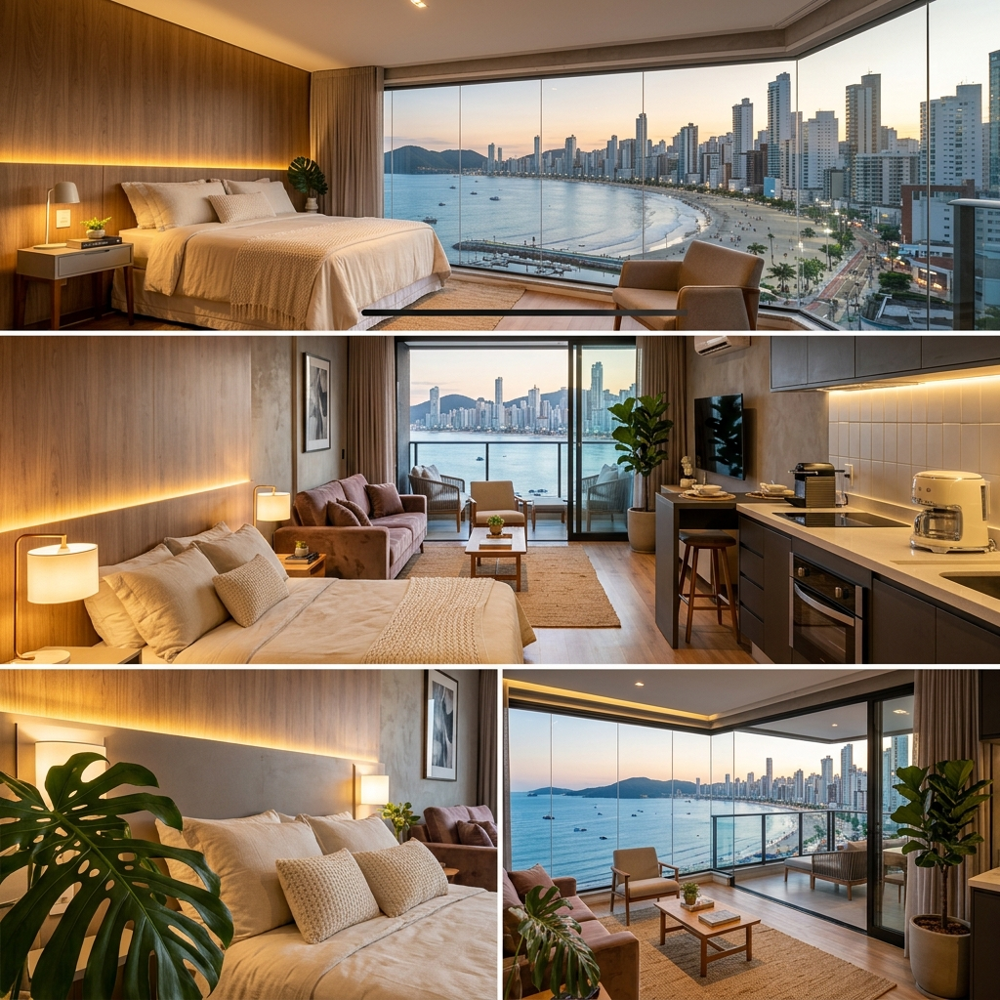
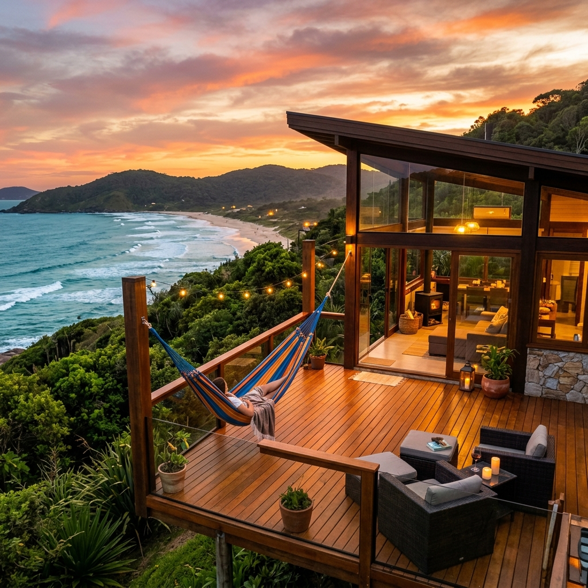

Dicas Iniciais
Como ser Superhost Airbnb em 2024: O Guia Definitivo
Entenda os requisitos atualizados pelo Airbnb e veja o plano de ação exato para conquistar o selo de Superhost.
Aprenda desde o básico até estratégias avançadas para criar anúncios irresistíveis e receber avaliações 5 estrelas.
Entenda os requisitos atualizados pelo Airbnb e veja o plano de ação exato para conquistar o selo de Superhost.

Como escolher lençóis, travesseiros e montar a cama perfeita para encantar seus hóspedes no primeiro olhar.

Saiba como acionar a proteção contra danos e responsabilidade civil de forma correta e rápida.

Técnicas de despersonalização e comunicação para resolver crises e proteger sua conta de reviews ruins.

Aprenda a fórmula para criar anúncios que aparecem na primeira página e atraem mais cliques.

Taxa dividida ou apenas-anfitrião? Entenda qual modelo escolher para maximizar seu lucro real.

Como adaptar seu anúncio para atrair nômades digitais e viajantes corporativos nos meses parados.

Saiba como disponibilizar seu espaço ou doar parte dos ganhos para abrigar pessoas em emergências.

O segredo dos superhosts: Descubra o que realmente conquista o hóspede de alto padrão e fatura mais.
Entenda o que mudou no viajante moderno, os novos requisitos e como fazer ele pagar mais pela sua diária.
O que realmente acontece nos bastidores de quem gerencia múltiplas propriedades e foca em escalar a renda.

As regras absolutas para receber cães-guia sem riscos de processos, multas ou banimento das plataformas.

A fórmula testada que transforma visualizações em reservas concretas otimizando títulos, fotos e precificação.

Como lucrar na Dubai Brasileira e entender o comportamento do hóspede de alto luxo em SC.

Como aproveitar o fluxo de milhares de famílias mensais para lucrar alto no litoral norte de SC.

Saiba por que o Vale do Itajaí é um dos mercados mais estáveis para aluguel de temporada em SC.

Entenda como gerir o impacto da TPA e por que Bombinhas atrai hóspedes de alta fidelidade em SC.

O passo a passo para automatizar a entrada do hóspede e garantir a primeira impressão perfeita.

Aprenda a gerenciar vistorias rápidas e o fechamento da estadia para fidelizar seus hóspedes.

Saiba quais cidades de SC estão atraindo os maiores ROIs em 2026 e como fugir da saturação.

A Receita Federal agora recebe dados diretos do Airbnb. Saiba como declarar e o que pode ser deduzido.

Como preparar seu imóvel para fotos irresistíveis e atrair hóspedes de alto padrão com o visual.

Como transformar casas de veraneio em experiências inesquecíveis no litoral sul de Santa Catarina.

Como Urubici e São Joaquim se tornaram os destinos mais cobiçados para quem busca o frio e a neve.

Como hospedar na cidade mais alemã do Brasil, focando em famílias e cultura local.
Como se posicionar no mercado de alto padrão em uma região com mais de 40 praias paradisíacas.

Como lucrar na maior cidade de SC, unindo o turismo corporativo ao charme da "Cidade das Flores".

Como atrair cicloturistas e amantes da natureza em Timbó, Indaial e o Circuito do Vale.

Como lucrar com o charme histórico, a Pesca com os Botos e as praias do Sul de SC.

Como lucrar com a força do Agronegócio e a demanda executiva na cidade que nunca para.

Como lucrar com a maior tendência de hospedagem de experiência no sul de Santa Catarina.

Como atrair hóspedes interessados em relaxamento e aventura a poucos quilômetros de Florianópolis.